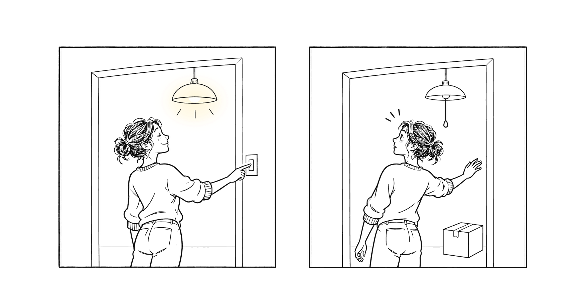
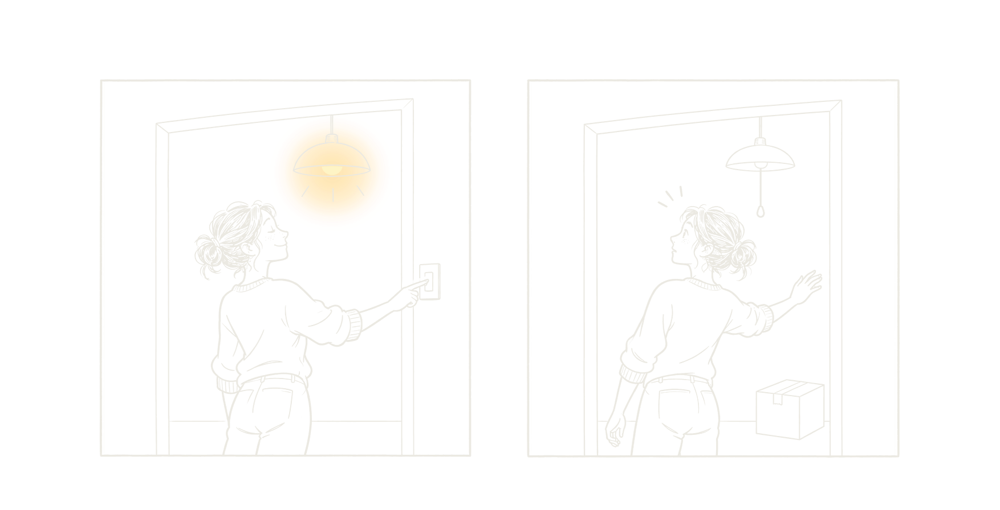

Carryover: when a model's memory no longer fits what it reads
A carryover effect is what happens when a model reads working memory that another computation wrote. We measured how much it moves the model's next word, at agent handoffs and across training.
AuthorsHossain Pazooki, Vikram Nadathur, Lingyuan Yan, Samuel Alake, Muhammad Zain Asad, Emerson Yu, Ritvik Aggarwal, Md Farhan Ishmam
You don't see the world fresh each moment. What reaches your eyes is patchy and a little late, so your brain fills in the rest from what it expects and what it remembers. Walk into your own kitchen in the dark and your hand finds the light switch without looking. That isn't sight. It's memory, recalled at the right moment, standing in for work your senses never did.
You can watch your brain do this. The square below never changes shade.
Figure 1 The square is one gray the whole way across. It looks lighter over the dark end and darker over the light end because your brain never reads the gray directly: it predicts what the square must be, given what surrounds it. Hide the background and the change disappears.
Seeing, then, is partly a prediction. This is a bargain, and mostly a good one. Recalling is cheaper than working things out again. But it only pays when the memory belongs to the situation you're in. Move house, and for a week your hand still reaches for a switch that is now a blank wall. The memory was accurate. It was just written for a different kitchen.


Figure 2 Most of what you do in a familiar room is memory, not sight.
Language models strike the same bargain. As a model reads, it keeps a working memory of everything so far, called the KV cache, so it doesn't have to reread the whole page to write the next word. It holds the numbers the model computed for each word, a key and a value, not a summary or a recollection of the story. Reusing that memory is one of the main ways the field keeps AI fast and affordable.
The question is whether memory computed under one set of conditions still fits the next. Two things can change: the words around it, and the model reading it.
Take a coding agent working on a real GitHub issue. The job is long, so it passes from one model to the next: one reads the code, the next writes the fix. Passing the cache along saves the next model from rereading everything. That is the first axis we study: memory passed along a chain of tasks, from one reader to another.
Now take a model that is still learning. In reinforcement learning, a model practices, gets feedback and updates itself, often while earlier versions of itself are still generating practice runs. Those earlier versions leave memory behind, and the updated model may read it. That is the second axis: memory passed across time, from the model you were to the model you are now.
Figure 3 Memory travels two ways. Left: a coding agent on SWE-bench, a benchmark of real GitHub issues, hands its work from one model to the next. Right: a model learning GSM8K grade-school math reads memory it wrote before it was updated. Sources: project ledger (handoffs); paper abstract (71%, one Qwen2.5-1.5B run).
On both axes, the reader does what your hand did in the new kitchen: it trusts memory written for a slightly different world. We call the result a carryover effect, a term borrowed from crossover trials, where one treatment lingers into the next.
Our finding comes down to one warning: a check on the memory alone can pass while the model's answers move. It is the gray square again: the memory itself checks out, but the model reads it against new surroundings. A model reading its own rewritten memory passes our memory check on every handoff, yet its next-word predictions still shift a little. A model handed memory from a smaller model in its family has to throw most of it out. And a model in training barely notices stale memory on ordinary text, but on its own practice problems it changed its answer on most math questions after a single update.
How far, exactly? To measure it we use an idealized helper we call the Oracle. The rest of this post builds that idea up: first the agent model, then the Oracle, then what we found.
Two ways memory goes stale
Picture a coding agent fixing a bug. The job is too long for one pass, so it gets split up. A planner reads the issue, a worker edits files, a checker runs the tests. Every time the work changes hands, the next step gets the story so far.
But it rarely gets it word for word. The system rewrites the transcript: a new prompt template wraps it, a summary replaces a long stretch, a tool output gets trimmed. Most of the text survives. Some of it moves to a new position, and a few pieces are new. The memory the last step built is sitting right there, and reusing it is tempting.
Figure 4 How a handoff reuses memory. The model keeps a key and a value for every token it reads. At a handoff, the next step gets much of the same text in new places, plus some new text. Matched text reuses its memory, new text is computed fresh, and drift is worst just after each seam. Schematic, modeled on the recorded handoffs, where a coding agent's working thread is rewritten for a summarizing step.
We call memory stale when it was written under one condition and is read under another. In an agent system, two conditions can change.
The first is the words around it. The same sentence means slightly different things to a model depending on what came before it. Re-render the transcript and every cached token was written with a different past than the one the reader now sees. This is the context axis.
The second is the model reading it. In reinforcement learning, the policy keeps updating while older rollouts are still being used. A cache written by yesterday's policy gets read by today's. The words are the same and the reader has changed. This is the weights axis.
Put the two together and you get a plane. A fresh cache, written by the same model over the same words, sits at the origin. Position sits there too: when a token only moves to a new slot, the rotary encoding inside the model corrects for the move exactly. The interesting question is what happens once you leave the origin.
Figure 5 The stale-memory plane. Agent handoffs move along the context axis, policy updates along the weights axis.
The Oracle: how far is the memory from the reader?
To know whether reused memory is close enough, you need something to compare it against. We have one: what the reader would have computed if it started fresh. For every token, we put the reused state next to the fresh one and measure the gap.
The gap is scaled by how much that part of the model normally moves around. A small difference in a part of the model that barely varies matters more than the same difference in a part that swings widely. Keys are compared after the position rotation is taken out, so a token that only moved is not counted as changed.
That gives every token a deviation score. Now set the worst tokens aside, one at a time, starting with the biggest gap. How many would you need to exclude before the average gap of what's left drops under an agreed tolerance? That share is the oracle removal fraction. It is a measurement, not a repair: it does not show that recomputing those tokens would fix the memory.
We call it an oracle because it cheats. It already knows the fresh answer, which a real system would not. So it measures disagreement, not cost. Think of it as a ruler, not a recipe. Try it below on the 35 long handoffs.
Figure 6 The Oracle's answer for every long handoff, at the four tolerances the run recorded. At the paper's tolerance of 0.32 the same-model reader needs nothing excluded on any of the 35; a different model needs most of the memory gone. Tighten the tolerance and the same-model handoffs spread out too. Hover or tap a column to follow one handoff through both panels. The lower panel shows why the same model passes at 0.32: the gap peaks in the first token or two after a seam, but the Oracle judges the average over the whole handoff, and most tokens sit far from any seam where the gap is small.
The tolerance matters, so we did not pick it after looking. We borrowed it from a mismatch we already understand: a small linear map that translates one model's memory into another's. Its error on held-out data sets the bar, one for keys and one for values. We also wrote down, before running anything, which removal fractions would count as low and which as high.
What we found
We start with the context axis. We took real handoffs from public runs of a coding agent on SWE-bench, a benchmark built from real GitHub issues: 35 long ones, running 35,000 to 80,000 tokens each, and 25 shorter ones. None of the rewritten transcripts matched the original word for word. Then we asked the Oracle about each one.
A model reading its own rewritten memory passes the memory check. When the same model wrote and read the memory, the Oracle had nothing to remove. Not one token, on any handoff, long or short. The same held for a second model family and for two more readers.
A different model reading it is not. Hand the same memory to a different model, through the best translation we could fit, and most of it has to go: 73% to 96%, depending on the pair (Figure 9, left). Shorter transcripts did not fix it. What matters is who wrote the memory, not the text itself.
The trouble lives at the seams. A seam is where the rewritten transcript picks the old text back up after something new. Drift peaks right after a seam and fades within a few tokens. Even at its peak it stayed under the tolerance, which is why nothing had to go (Figure 7).
Figure 7 Deviation by distance from the last seam, same-model reader. Each point is the median over every matched token in that bin; drag the slider or tap a column for counts. Source: project ledger, entries 0029 (25 short handoffs) and 0036 (35 long handoffs).
The tolerance is a real choice. Make it ten times stricter and the Oracle starts removing, about half the tokens on the long handoffs. Anyone using this ruler should say where they set it.
Close memory is not the same as the same answer. We also checked the word the model would write next. With reused memory it picked the same top word as with fresh memory at 9 in 10 positions, and its next-word odds still moved by a small, measurable amount: a median of 0.14 nats, a standard unit for how far two predictions differ. Then we tried two fakes with errors of the same size. Random noise almost never matched. Shuffling the right memories between tokens matched nearly as often as the real thing (Figure 8).
So two errors of the same size can have very different effects. Meeting the tolerance does not promise the model will say the same thing. Cache agreement and prediction agreement need separate checks.
This is the square from the top of the page. Checked token by token, reused memory matches fresh memory closely. Read in its new surroundings, it still led the model to a different next word at about 1 position in 10.
Figure 8 Reused memory against two controls with errors of matched size, Qwen3-1.7B on the 35 long handoffs. Source: carryover.pub figures data; ledger entry 0049.
We also looked at where the model's attention goes when it reads with fresh memory. About two fifths of it lands on matched text, and less than a tenth on the tokens that drifted most. That may be part of why reuse mostly holds up, though we only measured the last few positions of each handoff.
Then the weights axis. Here the words stay the same and the reader changes. A model in training reads memory it wrote up to 32 updates earlier. On ordinary text it barely notices, and its predictions stay well inside the margin we set. On the math problems it is training on, the gap is about 2,000 to 150,000 times larger and crosses that margin after one update (Figure 9, right). How many updates had passed mattered far less than what text the model was reading.
And the answers move. After a single update, stale memory changed the model's answer on 7 in 10 math problems, and on closer to 9 in 10 after that (Figure 10). By the last step it had undone almost all the accuracy that training added. Transcripts from a public agent benchmark, MLPerf Agentic Inference, stayed inside the margin, like ordinary text.
Figure 9 The two axes. Left: share of tokens the Oracle excludes at the key tolerance of 0.32, set from the cross-model map's held-out error, same-model and different-model readers, four model pairs. Right: divergence from fresh memory by training steps since the memory was written, five runs; held-out text, the policy's own prompts, and agentic benchmark windows. The four base runs put the gap at about 2,000 to 50,000 times; the fifth, instruction-tuned run takes it to about 150,000, as the camera-ready abstract reports. Sources: carryover.pub figures data; lag-ladder ledger entry 0039.
Figure 10 Share of GSM8K problems whose greedy answer changes when the policy reads stale memory, with 95% intervals. From two steps on, 84% to 89% of answers change, peaking at 1,180 of 1,319 problems at four steps. Source: carryover.pub figures data.
What we do not claim. On the context axis we did not test whether reused memory changes task success. We did not test what happens when memory is reused again and again across many handoffs. And we did not measure how much time or money reuse saves. Those are the next questions.
What this means if you build agents
Back to the kitchen. The switch is gone, and your hand still goes to the old wall. Most of the time the room is the same and your memory serves you fine. The mistakes happen at the edges, right where something changed.
Reused model memory behaves the same way. If the same model wrote it, most of it is still good, and the errors cluster at the seams. That suggests three habits.
Check predictions on the text you will serve. Memory that passes a check can still move the next word, and ordinary test text can hide what happens on real traffic. Check the model's predictions on the kind of text the cache will actually serve, not only the memory itself.
Measure your reuse margin offline. The Oracle needs a fresh reference, so it is an evaluation step, not a cheap check to run in production. Use it to learn how far your reuse sits from the tolerance, not just whether it passes.
Test seam-first recomputation. The worst tokens are not spread evenly. They sit right after the places where the transcript changed. Recomputing those first is a candidate strategy, and the next experiment is to check whether it actually restores the model's predictions.
The Oracle is a ruler. It tells you how far your memory is from the reader. The next step is turning that ruler into a policy a real system can afford to run.
Citation
This post is a companion to the paper. For attribution in academic contexts, please cite the paper as
@inproceedings{pazooki2026carryover,
title = {Carryover Effects in {KV} Caches Reused in Agentic Workflows and {RL} Training},
author = {Pazooki, Hossain and Nadathur, Vikram and Yan, Lingyuan and Alake, Samuel and Asad, Muhammad Zain and Yu, Emerson and Aggarwal, Ritvik and Ishmam, Md Farhan},
booktitle = {NeurIPS 2026 Workshop on Long Context Foundation Models},
year = {2026},
note = {Non-archival; camera-ready 13 November 2026},
url = {https://carryover.pub}
}
Where the numbers come from
Every number here traces to the paper's two public records: linear-ceiling for the context axis and the lag ladder for the weights axis. Each figure caption names its source: the long run's public data, the project ledger, the paper's abstract, or the figures data that carryover.pub is built from.